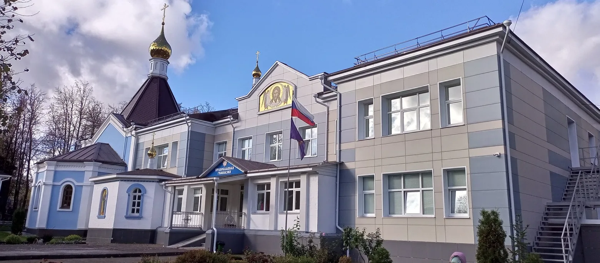
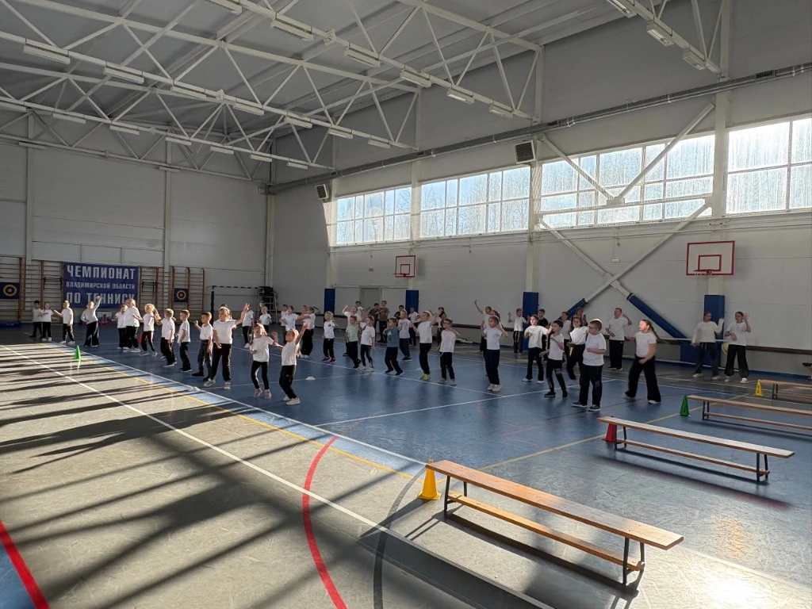
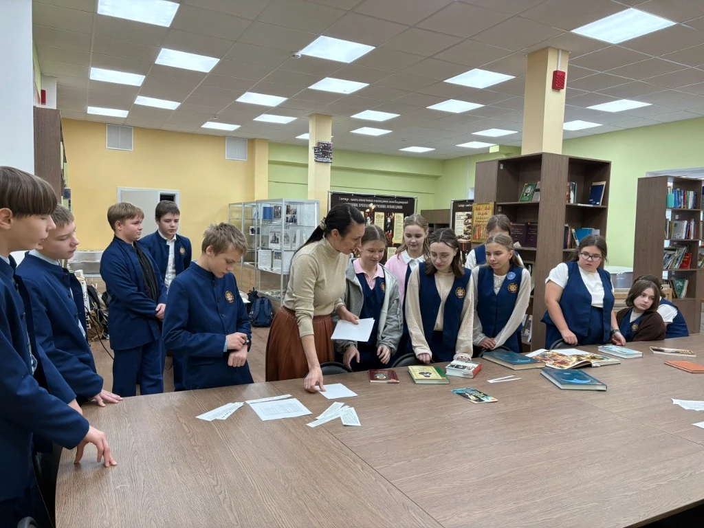
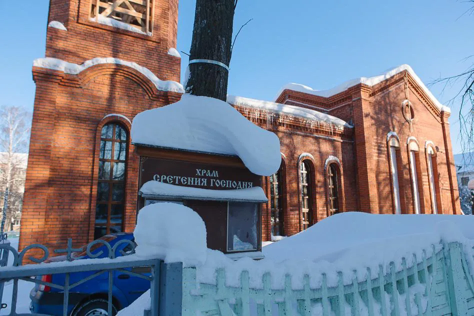
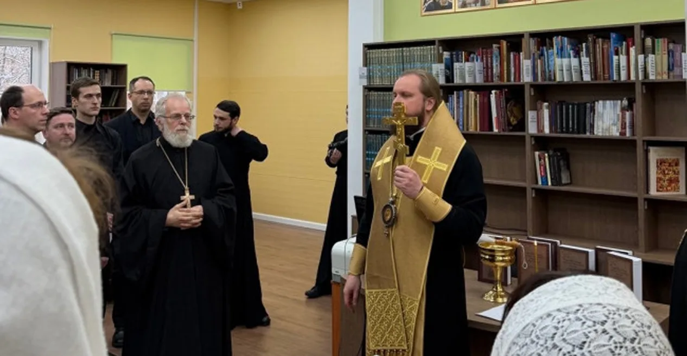
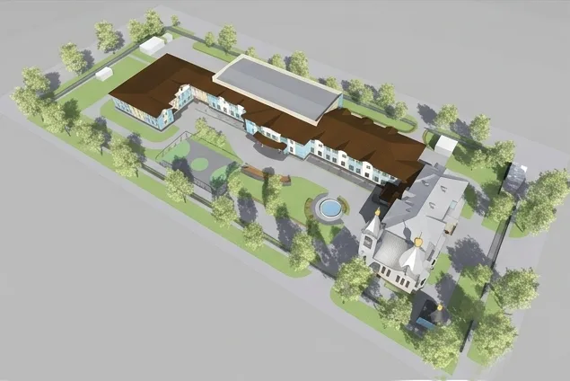
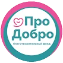

1 Га
Площадь территории с храмом
От полуразрушенного корпуса детского сада и 7 первых учеников — к современному духовно-образовательному городку площадью в 1 гектар. Хроника веры, упорного труда и созидания сотен жителей Коврова.
Масштабное образовательное пространство: современные учебные корпуса, собственный храм, спортивный комплекс и богатая библиотека

Площадь территории с храмом

Спортивный корпус с залом

Общая площадь учебных корпусов

Учебников и художественных книг
Хроника созидания гимназического комплекса: с 2007 года по наши дни
В мае 2007 года по благословению архиепископа Владимирского и Суздальского Евлогия Владимирская епархия учредила в Коврове православную гимназию. Первым директором и духовным вдохновителем стал благочинный города протоиерей Стефан. Судьбоносным шагом стала помощь легендарного предприятия: благодаря содействию руководства ОАО «Завод им. В.А. Дегтярёва» (ЗиД) и администрации города гимназии было передано пустующее здание бывшего детского сада на улице Подлесной, д. 10.
Здание находилось в полуразрушенном состоянии и требовало колоссального восстановительного труда, но общими усилиями верующих, прихожан и заводчан к концу лета первые классы были подготовлены. 1 сентября 2007 года прозвенел первый звонок, и за парты сели первые 7 учеников! Так родился исторический Спасский корпус гимназии.
«Мало кто верил, что в полуразрушенном здании заброшенного садика можно открыть настоящую гимназию. Но вера, труд и надежное плечо заводчан сотворили чудо.»


В 2008 году директором гимназии был назначен протоиерей Борис Липатов. Начался ответственный этап академического роста: формировался сильный педагогический коллектив, создавались уникальные образовательные программы, гармонично соединяющие государственный образовательный стандарт с традиционным духовно-нравственным воспитанием.
В 2009 году гимназия успешно выдержала государственные проверки и получила лицензию на право ведения образовательной деятельности, а в 2011 году — государственную аккредитацию. Небольшая начальная школа доказала высокий уровень знаний и завоевала безоговорочное доверие ковровских родителей: классы быстро заполнились, а гимназия заслужила авторитет в городе.
В 2016 году директором гимназии назначен священник Михаил Бунтилов. Перед коллективом встала принципиальная дилемма: начальная школа выпускала 4-й класс, и родители со слезами не хотели расставаться с гимназической средой. Было принято судьбоносное решение — гимназия должна вырасти в полноценную школу непрерывного цикла с 1 по 11 классы.
В мае 2017 года гимназия получила в безвозмездное пользование второе здание бывшего детского сада по адресу: ул. Сосновая, д. 10 вместе с прилегающим участком около 5 000 кв. м. После объединения с участком по ул. Подлесной общая территория составила около 1 гектара в зеленом спальном районе города. Это позволило разработать масштабный мастер-план единого образовательного комплекса.
Всего за год пустующее здание на Сосновой преобразилось до неузнаваемости. В сентябре 2018 года завершилась капитальная реконструкция учебного здания для средних и старших классов — Покровского корпуса. Здание рассчитано на 112 учащихся, 14 преподавателей и технический персонал, оборудовано круглосуточной охраной и новейшими предметными кабинетами.
А 4 декабря 2018 года, в великий праздник Введения во храм Пресвятой Богородицы, состоялось торжественное открытие первой школьной библиотеки, ставшей центром исследовательской, богословской и проектной работы гимназистов.
Стремительный рост числа учеников и прихожан потребовал качественного рывка инфраструктуры. В 2019 году из-за тесноты прежнего молитвенного зала был возведен и освящен новый просторный алтарь домового храма Сретения Господня и обустроена часовня святителя Филарета.
Одновременно при поддержке попечителей стартовала масштабная стройка отдельного спортивного корпуса размером 45 × 18 м: в ноябре 2019 года был закончен монтаж мощного металлокаркаса, а в декабре установлены стеновые сэндвич-панели. В 2020 году комплекс распахнул свои двери: на 1 этаже заработал универсальный спортзал для игровых видов спорта с тренерской, раздевалками, душевыми и инвентарной, а на 2 этаже — просторный актовый зал со сценой для общегимназических собраний, концертов и праздников.


26 апреля 2021 года началось строительство жемчужины всего комплекса — отдельного каменного двупрестольного Храма в честь Сретения Господня. Возведение храма стало поистине соборным делом: была объявлена благотворительная акция «Именной кирпич», в которой приняли участие сотни прихожан, родителей, предпринимателей и друзей гимназии. Каждый именной кирпичик лег в кладку стен и алтаря.
Строительство завершилось в рекордные сроки: 1 сентября 2022 года митрополит Владимирский и Суздальский Тихон и епископ Ковровский Стефан совершили чин великого освящения храма. Гимназия встретила юбилейный 15-й учебный год под колокольный звон собственного храма — духовного сердца и молитвенного щита для каждого ребенка.
«Храм Сретения Господня — живое свидетельство соборности и любви к детям: стены святыни сложены из именных кирпичей сотен ковровских семей.»

3 июля 2023 года был дан официальный старт строительству нового двухэтажного здания между спортивным комплексом и Покровским корпусом. Осенью 2023 года строители завершили монтаж металлокаркаса, а к концу года полностью закончили первый этаж и монолитную заливку перекрытий. Весной 2024 года началось возведение второго этажа — бетонирование несущих колонн и кладка стен блоками из ячеистого автоклавного бетона.
Новый корпус решил важнейшие задачи всей гимназии: он связал здания в единую теплую галерею (детям больше не нужно надевать куртки и выходить на улицу для перехода на уроки физкультуры или в трапезную), вместил общешкольный пищеблок с просторным обеденным залом, новые гардеробы для мальчиков и девочек, читальный зал и дополнительные учебные кабинеты.


11 января 2026 года митрополит Никандр совершил чин освящения новой библиотеки на 2-м этаже Архангельского корпуса и передал в дар гимназии уникальное собрание трудов равноапостольного Николая Японского.
Сегодня Православная гимназия города Коврова — это признанный образовательный и духовный центр Владимирской области: непрерывное обучение с 1 по 11 классы, собственный каменный храм, спортивный комплекс, фонд свыше 5 770 книг и крепкое содружество учеников, учителей и родителей.



Территория площадью около 1 гектара в экологичном спальном районе города с хорошей транспортной доступностью. Проект объединяет Спасский и Покровский корпуса, спортивный комплекс, храм и парковую зону в единую безбарьерную экосистему.
Проектом предусмотрены асфальтированные проезды, мощение пешеходных дорожек брусчаткой, разбивка газонов, цветников и живых изгородей, открытые спортивные площадки и безопасный закрытый периметр.
 В проекте
В проекте
 В проекте
В проекте
Строительство корпусов, храма Сретения Господня, спортивного зала и новой библиотеки стало возможным благодаря искренней помощи предприятий города, Попечительского совета и сотен жителей Коврова, вложивших свои имена в именные кирпичи.
ОАО «Завод им. В.А. Дегтярёва» (ЗиД), передавший первое здание и оказывающий постоянную шефскую помощь; компании «Аскона», «Декоретта» и городские предприятия, помогающие развивать материальную базу.
Священнослужители, руководители предприятий, депутаты и общественные деятели города во главе со священником Михаилом Бунтиловым, направляющие стратегию развития школы.
Тысячи неравнодушных жителей Коврова и родителей внесли свою лепту через акцию «Именной кирпич», из которых возведены стены и алтарь Сретенского храма.

Каждый перевод направляется строго на развитие образовательной среды, ремонт корпусов и поддержку детей. Отсканируйте QR-код в приложении банка (СБП) или скопируйте реквизиты.